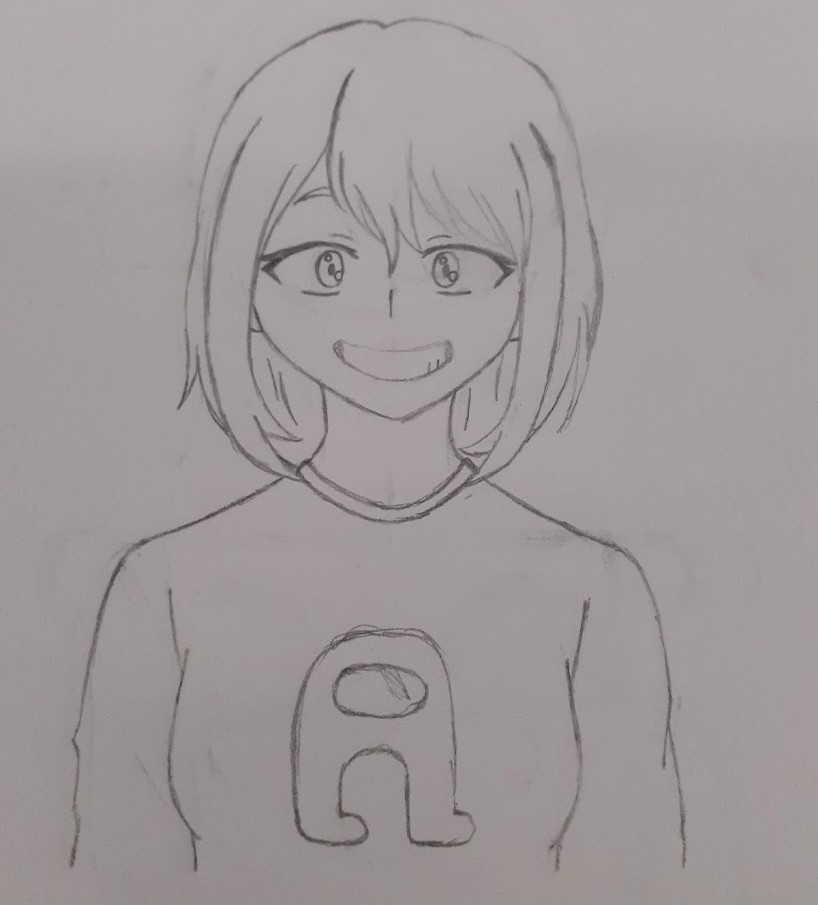
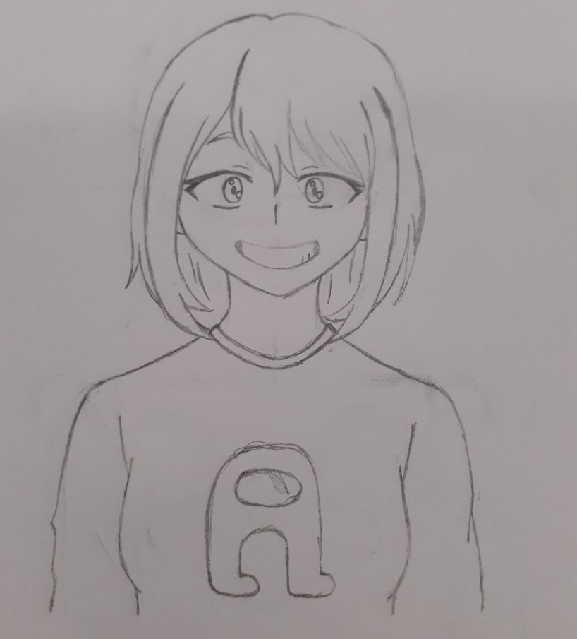

Maya Hansen

How it came to life
Right after creating Hiro, I decided to create more characters and integrate them to my story that I was writing at the time, and Maya was the second character I came up with. Her name comes from the character May from the Pokémon series. I added an 'a', and made it my character. How original.
I made her in the image of my 'perfect girl'. She is everything I would wish for in a romantic interest, and because of that, she is Hiro's romantic interest. This is mainly the reason why she is my comfort character.
She's shy and doesn't open easily, but once she gets comfortable with you, she becomes a complete chatterbox. She's very emotional, but mature at the same time. Maya loves reading, spending time with her loved ones, and cats. Her favourite color is yellow.
Inspirations
Maya's current design is based on Kim Chaewon from the K-pop group Le Sserafim, especially when she had blond hair. Part of her design was also inspired by Hanni from NewJeans, and Rosé from Blackpink.
Previous Designs
2015 - 2019
 

2020 - 2023

2024/25